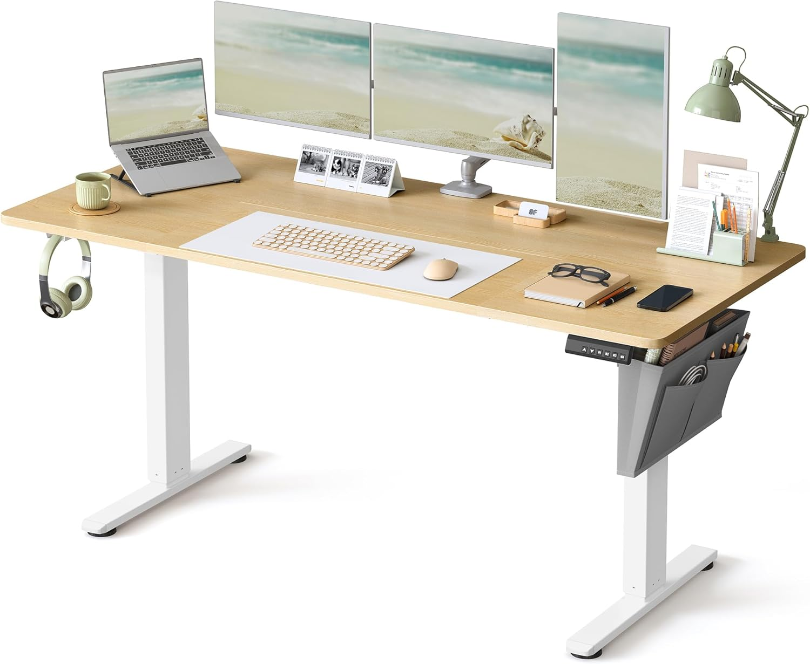

Alternancia postural: Cuándo usar un escritorio elevable y cuándo necesitas un cojín coxis

Introducción
Las tasas de dolor de espalda en el teletrabajo se han disparado. Ante esto, muchos profesionales invierten directamente en un escritorio elevable creyendo que trabajar de pie solucionará mágicamente sus molestias. Sin embargo, ¿qué ocurre cuando te cansas de estar de pie?
1. El mito de estar de pie todo el día
Pasar ocho horas de pie es igual de contraproducente para las articulaciones que pasarlas sentado. Si abandonas la silla por completo, la presión ya no recae en tus lumbares de la misma forma, pero se traslada a las rodillas, tobillos y la fascia plantar. Esta es la razón por la cual un escritorio elevable debe usarse para alternar posturas, no de manera estática.
Nuestra recomendación es utilizar el escritorio en posición elevada durante intervalos de 30-45 minutos, varias veces al día, y volver a sentarse antes de sentir un agotamiento profundo en las piernas.

2. Cuándo es mejor sentarse con un cojín ortopédico
Al bajar de nuevo el escritorio, volverás a depositar un estrés inmenso en el sacro y la base de la columna. Si la silla no es adecuada o si ya arrastras microtraumatismos de sedestaciones anteriores, el contraste puede resultar muy doloroso.
Es precisamente en estas horas sentadas donde necesitas descargar presión. Integrando uno de los mejores cojines viscoelásticos para coxis sobre el asiento, minimizas el impacto que tiene en tu cuerpo el retorno a la posición sentada, repartiendo el peso perimetralmente alrededor del hueco posterior del cojín.
3. La combinación ganadora: Tu setup dinámico
La clave de la ergonomía contemporánea es el movimiento continuo. Un buen escritorio elevable te brinda la opción de variar tu postura, mientras que el cojín ortopédico actúa de red de seguridad cuando tus piernas exigen bajar de altura.
Si sientes que al bajar tu escritorio la silla resulta dura o aumenta el dolor en tus caderas, te recomendamos probar la siguiente opción:

SONGMICS Escritorio Elevable Eléctrico
- Motor único silencioso
- 3 alturas memorizables
- Ideal para espacios pequeños
179,99 €